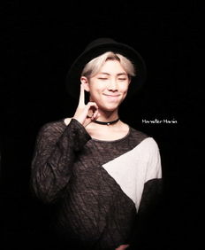
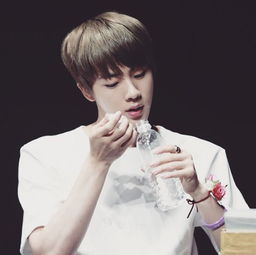
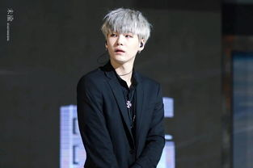
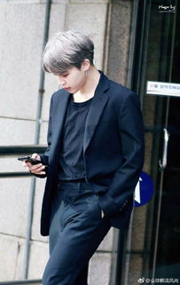

BTS-防弹少年团
防弹少年团简介
防弹少年团（BTS），韩国男子演唱组合，由金南俊、金硕珍、闵玧其、郑号锡、朴智旻、金泰亨、田柾国7名成员组成。2013年6月12日，发行出道单曲《2 COOL 4 SKOOL》；同年11月14日，获第5届Melon音乐盛典最佳新人奖。2014年1月，获第28届韩国金唱片专辑部门新人奖、第23届High1首尔歌谣大赏新人奖；同年2月12日，发行迷你专辑《School of Affair》。2015年1月22日，获第24届首尔歌谣大赏本赏。2016年12月2日，获得第八届MAMA音乐盛典年度艺人大赏，最佳舞蹈本赏。2017年2月13日发行新专辑《WINGS外传：You Never Walk Alone》[1]；同年2月17日，获第5届Gaon Chart K-POP Awards K-POP世界韩流明星奖。
2013年，6月6日首张单曲专辑主打曲《NoMoreDream》预告Ver.1影像公开；6月9日首张单曲专辑主打曲《NoMoreDream》预告Ver.2影像公开；6月12日发行首张出道单曲专辑《2Cool4Skool》，公开主打曲《NoMoreDream》官方完整版MV；6月13日在MnetM！Countdown以出道曲《NoMoreDream》进行首次出道舞台；6月22日首次电台节目神童的深深打破；7月4日M!Countdown特别舞台《BTSDanceBreak》；7月8日《2Cool4Skool》登上Hanteo榜单日榜及实时榜单一位；7月12日公开自创单曲《BornSinger》；7月17日公开专辑《2Cool4Skool》收录曲《WeAreBulletproofPt.2》官方完整版MV；9月6日首张迷你专辑主打曲《N.O》预告Ver.1影像公开；11月14日，防弹少年团获得第5届Melon音乐盛典最佳新人奖；12月27日，参加“炫动韩风”2013韩流北京演唱会。
2014年,1月16日，防弹少年团获得第28届韩国金唱片专辑部门新人奖；2月2日 迷你专辑《Skool Luv Affair》Comeback Trailer回归预告影像公开；2月3日 迷你专辑《Skool Luv Affair》Concept Photos公开；2月12日 发行第二张迷你专辑《School of Affair》；2月23日 出道八个月登人气歌谣一位候补；3月，防弹少年团首个粉丝俱乐部正式成立，并公开粉丝名称“A.R.M.Y.”；10月17日，出道后首场单独演唱会《BTS 2014 LIVE TRILOGY EPISODE II. THE RED BULLET》在首尔正式拉开帷幕。
2016年,7月4日，男团防弹少年团经纪公司BIG HIT娱乐宣布，防弹少年团确定将参加8月28日在日本东京Ajinomoto Stadium举办的「a-nation island & stadium fes. 2016 powered by dTV」。2016年3月18日，防弹少年团的歌曲《屌》（DOPE）MV，在最近突破五千万人次浏览。
2017年,4月11日，2017上海草莓音乐节全名单公布 ，防弹少年团在列。
成员图片

成员介绍
金南俊，1994年9月12日出生于韩国，韩国歌手，男子组合防弹少年团成员之一。2013年6月12日，组合发行出道单曲《2 COOL 4 SKOOL》；6月13日，在M!Countdown以歌曲《No More Dream》正式出道，并担任防弹少年团队长的职务；9月11日，由Rap Monster参与制作的防弹少年团首张迷你专辑《O!RUL8,2?》发行。2014年5月13日，个人出演了Mnet真人秀节目《4种秀》；8月20日，发布由Rap Monster参与创作的防弹少年团首张正规专辑《DARK & WILD》。2015年2月26日，个人作为固定嘉宾演出tvN新艺能脱口秀节目《大脑性感时代问题的男人》；3月5日，发布与美国嘻哈音乐人Warren G的合作曲《P.D.D》；同年3月20日，发表个人Mixtape《RM》。2017年3月20号，即《RM》两周年时发布与美国Rapper Walt的合作曲《Change》。
金硕珍（JIN），男，1992年12月4日出生于韩国京畿道果川市，韩国歌手。2013年6月12日，通过单曲专辑《2COOL4SKOOL》出道；11月14日，获Melon音乐盛典最佳新人奖。2014年1月6日，获金唱片大赏专辑部门新人奖；1月23日，获首尔歌谣大赏新人奖；2月12日，获Gaon Kpop Chart Awards年度最佳新人；4月15日，获音悦V榜年度盛典韩国地区最佳新人奖；8月20日，发布首张专辑《DARK&WILD》；9月30日，通过日语单曲专辑《NoMoreDream(JapaneseVer.)》在日本出道。2015年1月22日，获首尔歌谣大赏本奖；1月28日，获Gaon Kpop Chart Awards年度发现奖；4月29日，发布第三张迷你专辑《花样年华pt.1》。
闵玧其，1993年03月09日出生于韩国大邱，韩国男歌手，男子演唱组合防弹少年团成员。2013年6月12日，通过单曲专辑《2 COOL 4 SKOOL》出道。2014年8月20日，发布首张专辑《DARK&WILD》；9月30日，通过日语单曲专辑《No More Dream (Japanese Ver.)》在日本出道。2015年4月29日，发布第三张迷你专辑《花样年华 pt.1》。2016年8月16日，闵玧其发行个人首张Mixtape专辑《Agust D》。
郑号锡，1994年02月18日出生于韩国全罗南道光州市，韩国男歌手，七人男子演唱组合防弹少年团成员。2013年6月13日，作为防弹少年团成员出道，发行出道单曲《2 COOL 4 SKOOL》。2014年2月12日，发行第二张迷你专辑《Skool Luv Affair》；8月20日发行首张正规专辑《DARK & WILD》；同年11月21日，与越南歌手Thanh合作单曲《Danger （Mo-Blue-Mix）》。2016年6月19日，与金泰亨共同担任SBS音乐节目《人气歌谣》的特别MC。
朴智旻，1995年10月13日出生于韩国釜山，韩国男歌手，男子演唱组合防弹少年团成员。2013年6月12日，通过单曲专辑《2 COOL 4 SKOOL》出道。2014年获得第二届音悦V榜年度盛典韩国地区最佳新人奖；同年8月20日，发布首张专辑《DARK&WILD》；同年9月30日，通过日语单曲专辑《No More Dream (Japanese Ver.)》在日本出道。2015年4月29日，发布第三张迷你专辑《花样年华 pt.1》。
金泰亨，1995年12月30日出生于韩国大邱，韩国男歌手，男子演唱组合防弹少年团成员。2013年6月12日，通过单曲专辑《2 COOL 4 SKOOL》出道。2014年8月20日，发布首张专辑《DARK&WILD》；9月30日，通过日语单曲专辑《No More Dream (Japanese Ver.)》在日本出道。2015年4月29日，发布第三张迷你专辑《花样年华 pt.1》。2016年出演KBS 2TV新剧《花郎：The Beginning》。2016年12月28日，美国电影网站TC Candler发布了“2016全球最帅面孔榜单”，金泰亨排名第60。
田柾国，1997年9月1日出生于韩国釜山，韩国男歌手，韩国男子组合防弹少年团成员。2013年6月12日，田柾国以防弹少年团成员身份正式出道，随组合发行出道单曲《2 COOL 4 SKOOL》；同月11日，随组合发行首张迷你专辑《O！RUL8，2？》。2014年6月4日，随组合进军日本并发行首张日语单曲专辑《No More Dream（Japanese ver）》。2015年2月26日，随组合发行首张日语正规专辑《WAKE UP》。2016年6月4日，公开与Rap Monster一起演唱的特别歌曲《知道》；6月28日，田柾国与神话成员李玟雨共同出演《花美男Bromance》。
人物评价
坚持自我的防弹少年团在众多男团中展露头角的原因就是他们有着明确的方向、价值观以及与众不同的音乐风格。防弹少年团并未追逐流行，而是有条不紊地打造团队特色。